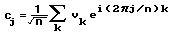
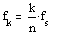
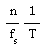

DFT/IDFT of Complex Data |
cfft(A) Returns the Discrete Fourier Transform of a vector or matrix. The result has the same number of rows and columns as A. If A is a vector, the result is given by:

where n is the number of elements in v. For matrix arguments, cfft returns the two-dimensional Fourier transform, scaled by 1/n. Calculated using the Singleton method.
icfft(u) Returns the inverse Fourier transform for u created with cfft.
CFFT(A) Returns the Discrete Fourier Transform of a vector or matrix. The formula is equivalent to cfft, but is scaled by 1/n instead of 1/√n (1/n2 in the 2-D case), and uses a negative exponent going from the time to the frequency domain.
ICFFT(u) Returns the inverse Fourier transform for u created with CFFT. The formula is equivalent to icfft, but is scaled by 1/n instead of 1/√n, and uses a positive exponent going from the frequency to the time domain.
The frequency spacing associated with the kth element in the calculated FFT spectrum is given by:

where fs is the sampling frequency of the original signal and n is the number of samples. As a consequence, since k must be an integer, spreading in the spectrum occurs unless the sampling frequency is chosen so that

is always equal to an integer for any period 1/T in the signal.